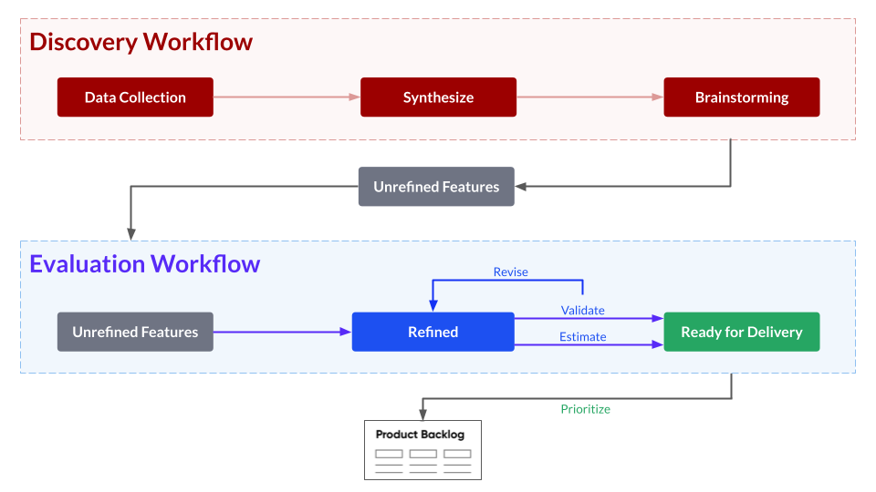
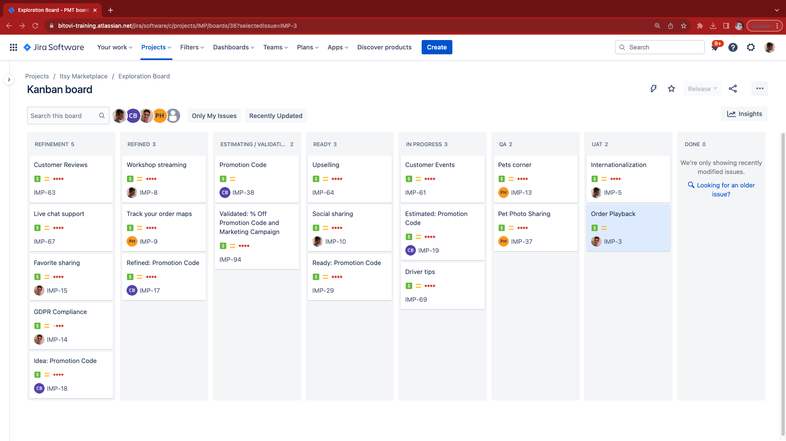

Continuous Exploration page
Learn about the Continuous Evaluation workflow and Jira board we use to take feature ideas and turn them into actionable multi-team plans.
Overview
In this section, you will learn:
- About Continuous Exploration, a process for identifying which features best serve a product and its customers.
- How the Evaluation workflow fits within the overall Continuous Exploration process.
- Learn the basic flow of Continuous Exploration and how it maps to the Jira board we will be using.
For the exercise, you will download the Continuous Exploration process document so you can share it with your team.
The following is the Google Slides presentation for this material:
Continuous Exploration
Continuous Exploration is the process of determining which features should be built to maximize product value and customer success. The output of the Continuous Exploration process is the product backlog - a prioritized list of features that represents the product team’s best guess at how they will achieve their target outcomes.
Continuous Exploration is a term popularized by Scaled Agile. The following is their definition:
Continuous Exploration (CE) is the process that drives innovation and fosters alignment on what should be built by continually exploring market and customer needs, and defining a Vision, Roadmap, and set of Features for a Solution that addresses those needs. © Scaled Agile, Inc.
Bitovi’s Continuous Exploration process is represented by the following two combined workflows:

The Discovery Workflow looks at data, analytics, customer feedback and competitor research to source strong feature ideas.
The Evaluation Workflow gets alignment on what the feature represents and evaluates the costs and benefits of the idea.
Often, these workflows are shared partially across 2 individuals that cooperate closely together:
A Product Manager, Product Owner, or Product Researcher - responsible for the Discovery Workflow and helps evaluate the benefit. They are doing customer research, surveying customers, constantly looking at analytics.
A Program Manager, Delivery Manager or Technical Product Owner (TPO) - responsible for managing how and when features get built. They help define the requirements, and work with engineering teams to estimate work. They also report on the progress of the work.
The Discovery Workflow is out of the scope of this training. This training is largely focused on the Program Manager, Delivery Manager, or TPO role. So, we will focus on the Evaluation workflow.
Evaluation Workflow
The evaluation workflow's goal is to produce a prioritized list of features that represents the product team’s best guess at how they will achieve their target outcomes. This best guess is often called the product backlog. In summary, there are four broad steps to produce a prioritized list of features:
- Define what the feature is.
- Evaluate and validate the feature’s benefits.
- Estimate the feature’s costs.
- Rank the feature against other features.
In the next page, step of the tutorial, an exploration board and workflow to help us manage this process.
Exploration Board Overview
In the next lesson, we will be setting up a Board in Jira to manage the exploration process. Let’s take a look at it now to get a sense of it.
It first starts with an ideas space. This is the backlog below:

Team members add their rough ideas into backlog. This should be prioritized with the
strongest ideas at the top.
Once the team has capacity to explore new work, they move those features into
refinement. Anything added to refinement above automatically gets added to
refinement the board below:

This board tracks features as they progress from rough ideas to implemented features available to customers. The following summarizes each column:
Refinement- The Program Manager is working to define the goals of the feature and its specific requirements.Refined- The feature is defined well-enough for estimation and validation to begin.Estimating / Validating- The feature is being estimated or validated.Ready- The feature is prioritized and ready for development.In Progress- The feature is being developed.QA- The feature is being tested.UAT- The feature is being validated against users.Done- The feature was successfully released to customers.
Exercise: Share the Workflow
Now that you’ve been introduced to the continuous exploration workflow, its time to get the resource you can use to introduce your team to the process. Please download the and review the following link:
Continuous Exploration Workflow PDF
You can use it as a template to establish your team’s continuous exploration process!